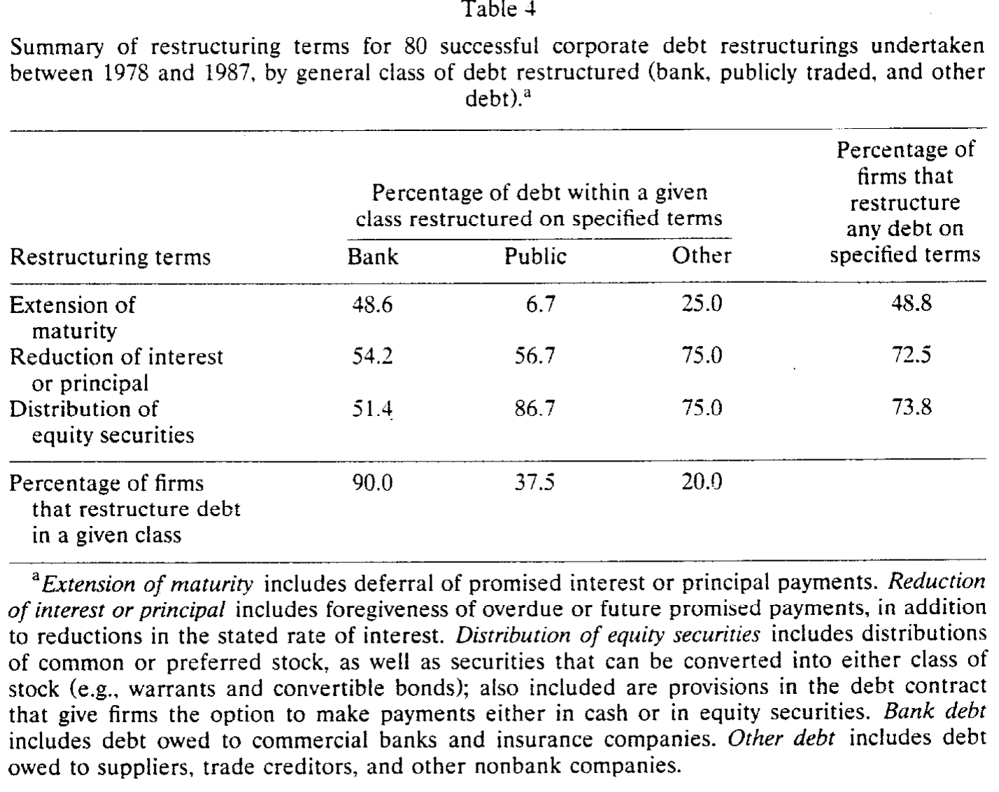
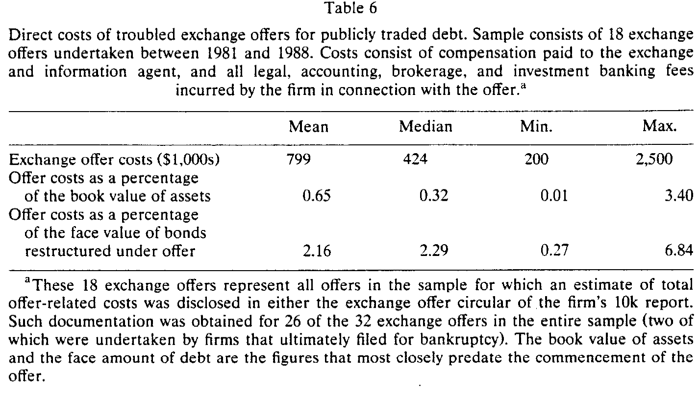
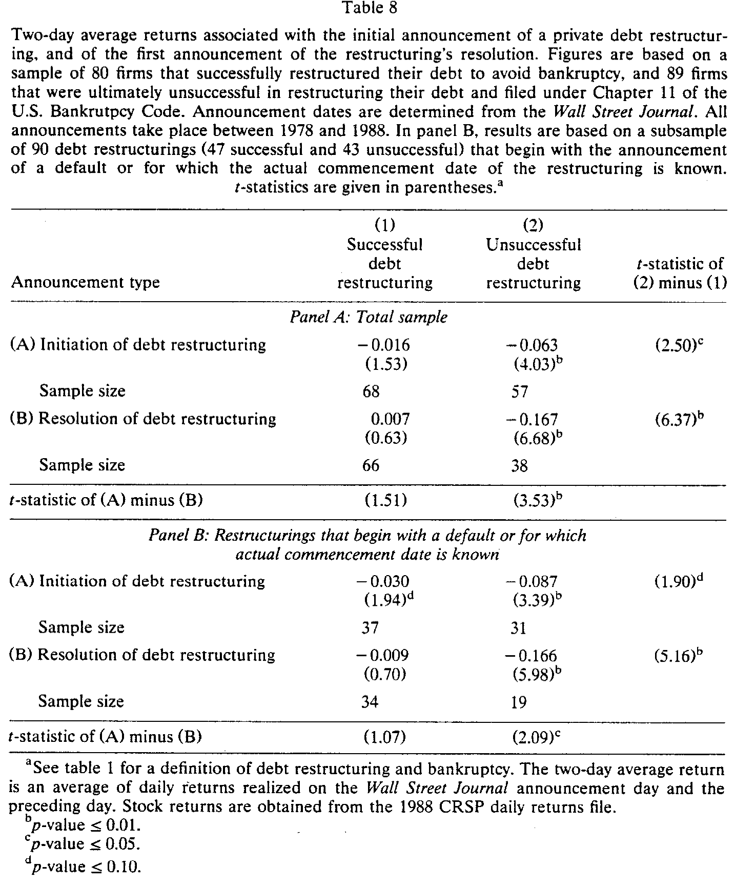
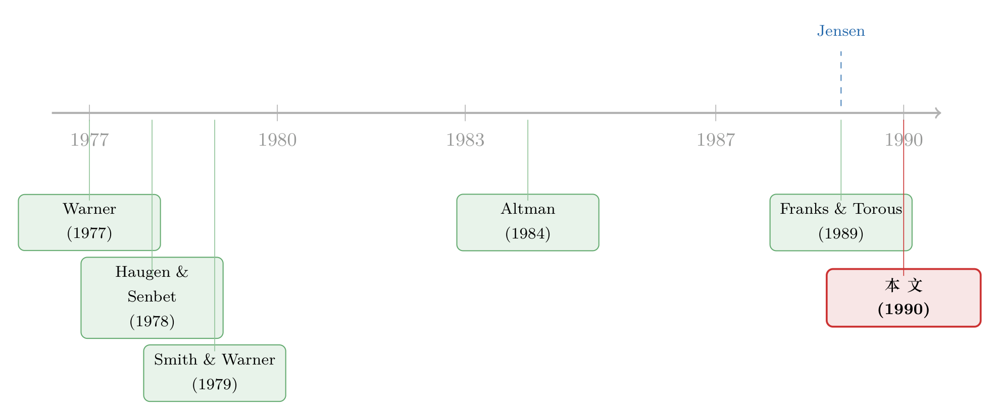

庭外那条路：为什么有的公司能绕开破产法庭，有的不能
本文读的是 Gilson, John & Lang (1990, Journal of Financial Economics)：在 169 家陷入严重财务困境的公司里，约有一半成功地在庭外（而非走 Chapter 11）重组了债务。哪些公司更可能走通这条「庭外的暗路」？答案是——无形资产越多、欠银行的钱越多、债权人种类越少。而且，市场早在结局揭晓之前，就已经把这两类公司分开称重了：庭外重组的股东，系统性地过得更好。
1 引言：太多的债，会不会以一种「太贵」的方式爆掉？
1980 年代末，华尔街的空气里飘着一股焦虑。杠杆收购 (leveraged buyout, LBO) 与各种高杠杆交易层出不穷，《华尔街日报》在 1988 年 10 月的一篇报道里用了「leveraged to the hilt（杠杆加到了顶）」这样的标题。人们担心的是同一件事：一旦经济转入衰退，这些背着巨额债务的公司会不会成片地违约？
但比「会不会违约」更要命的，是另一个问题：违约本身，到底贵不贵？
这正是 Michael Jensen 在 1989 年那两篇著名檄文（"Active Investors, LBOs, and the Privatization of Bankruptcy" 与 "Eclipse of the Public Corporation"）里抛出的论点。Jensen 说，高杠杆不必然是灾难——只要私人契约能用一种比法庭更便宜的方式来处理违约，那么「破产」这件事就可以被「私有化」。换句话说，公司陷入债务困境时，并不是只有一条路通向破产法庭；它还可以坐下来，和债权人私下谈一场 重组 (workout)。
问题是，这只是 Jensen 在理论上的一句断言。真有公司能绕开破产法庭、把债私下重组掉吗？如果有，是哪一类公司？这条庭外的路，对股东到底是好事还是坏事？ Gilson、John 与 Lang 这篇 1990 年的论文，第一次用一个像样的样本，把这些问题摆到了显微镜底下。
2 两条岔路：Chapter 11 还是「私下谈」
一家必须修改债务条款、否则就要违约的公司，面前有两条路。
一条是申请破产，走 美国破产法第十一章 (Chapter 11)。Chapter 11 被当作公司重整来处理：法庭会给公司套上一道 自动中止 (automatic stay)，禁止债权人在公司重整期间催收或没收抵押品；公司把债权人分成若干 类别 (class)，对每一类提出一个证券交换方案；方案获得通过，需要每一个「受损类别」里达到多数同意（价值的三分之二、人数的一半）；遇到僵局，法庭甚至可以对持异议的类别强行 压服 (cram down)。
另一条路，就是不进法庭，私下和债权人谈，把受损的债权换成新证券——这就是 workout。
两条路的「目的地」其实一样：都是让债权人同意把手里贬值的债权，换成公司的新证券。区别全在「过程」——以及过程背后那笔看不见的账。
那么，一家公司凭什么选其中一条而不是另一条？作者把它拆成两股力量，这也是全文的理论骨架。
第一股力量，是成本。 如果庭外重组比 Chapter 11 更便宜，那么公司的总价值就更高，原来的债权人和股东就能在一个更大的饼上重新分配，人人都可以过得更好。所以，庭外重组能省下的成本越大，各方就越有动力私下和解。
成本省在哪？直接成本——律师费、投行费——业界公认 Chapter 11 更贵，因为每一步都要在法官面前起草、辩论各种法律动议，破产律师甚至有动机故意把公司「拖」在 Chapter 11 里，因为他们的报酬是优先受偿的。但作者很诚实：律师费、管理层时间这些成本，他们找不到合适的实证代理变量，只能放弃。他们真正用来检验的，是另一种成本——当公司被迫变卖资产去还债时，那部分被毁掉的持续经营价值 (going-concern value)。
这一步是文章的关键转折。作者论证：在 Chapter 11 里，资产更容易被卖掉（自动中止让债务人有权处置资产、担保债权人偏好清算、法院命令下的资产出售不受法律挑战……）。而资产一旦被拆开变卖，损失最大的，恰恰是那些无形的、产生公司专属租金的资产——成长机会、管理层的专用人力资本、垄断力、协同效应。于是他们用一个绝妙的代理变量来度量这种潜在损失：
$$\text{(market value of the firm)} / \text{(replacement cost of assets)}$$
分母——资产的重置成本——近似于这些资产被一件件拆开变卖能卖到的价钱。这个比率越高，说明公司的价值越「无形」、越离不开资产被捆在一起，那么 Chapter 11 对它就越贵，它就越应该选择庭外重组。
第二股力量，是「谈得拢谈不拢」。 就算大家都相信庭外更省钱，谈判也可能因为个别债权人坐地起价而崩掉——这就是 拒绝搭车问题 (holdout problem)。庭外重组通常需要所有受损债权人一致同意；任何一个被排除在外的债权人，都可以加速求偿、甚至递交一份非自愿的 Chapter 11 申请，把公司直接推进法庭。相比之下，Chapter 11 只需要每个类别里的多数同意，还有 cram-down 兜底，holdout 反而没那么致命。
由此，作者推出三个关于 holdout 的可检验命题：
- 债权人越多，至少有一票反对的概率越高，私下重组越难成（沿着 Smith & Warner (1979) 的逻辑：私募债、债权人少，更好谈）；
- 越多的债欠给银行和保险公司，越好谈——这类债权人少、专业、信息不对称小，更愿意庭外和解（呼应 Stein (1989)、James (1987)）；
- 资本结构越复杂（不同求偿权差异越大），越容易在「方案是否公平」上吵起来，越难成。
特别地，公开发行的债券是 holdout 的重灾区：根据 1939 年的 信托契约法 (Trust Indenture Act)，未经每一个债券持有人同意，不得修改债券的本金、利率、到期日这些「核心条款」。所以公开债的重组几乎总是采取 交换要约 (exchange offer) 的形式——而由于参与是自愿的，分散的小债券持有人天生就有搭便车、不肯交券的动机。
3 数据与识别：169 家「掉队者」的命运
把上面这套逻辑搬到数据上，需要的是一批真正陷入困境、并且确实在「庭外」和「Chapter 11」之间做过选择的公司。作者搜集了 1978–1987 年间经历严重财务困境的 169 家公开交易公司。识别的关键，是这批公司提供了一个干净的二分因变量：它最终是在庭外成功重组了债务，还是进了 Chapter 11。

Table 1
结果的第一个事实就足够震撼：在这 169 家公司里，约有一半成功地在庭外重组了债务。也就是说，「破产」远不是困境公司唯一的归宿——庭外那条路，真实地承载了相当一部分交通。作为对照，作者注意到在他们的样本里，由 Chapter 11 转入 Chapter 7 清算的比例只有约 5%；而 White (1989) 对纽约南区一个包含非上市公司的样本估计，约有三分之一最终进了 Chapter 7 或变成清算式重整——可见清算的比例对样本相当敏感。
这里要提醒一句识别上的细节：作者并没有去直接测量「庭外比破产省了多少钱」（前面说过，律师费、时间成本这些根本测不到）。他们的策略是 横截面对比——把"选择了庭外 vs. 选择了 Chapter 11"这个决策，和那些度量「省钱潜力」与「holdout 严重程度」的代理变量联系起来，看哪一类公司系统性地走了哪条路。
4 主要结果：谁能走通庭外这条路
把上一节那套理论命题逐一放到数据里检验，三条主线全部成立：
第一，无形资产越多的公司，越倾向庭外重组。 用 市值/重置成本 这个比率度量，比率越高的公司越可能私下和解——正如理论所言，Chapter 11 的资产变卖对这类公司最伤。
第二，欠银行的钱越多，越能私下谈成。 银行（以及持有私募债的保险公司）人少、专业、信息不对称小，是庭外重组里最配合的一类债权人。
第三，债权人的「种类」越多，私下谈成的概率越低。 资本结构越复杂、不同求偿权差异越大，越容易在分配方案上吵翻，holdout 越严重。

Table 6
但全文真正漂亮的一笔，是 股票收益 给出的「交叉印证」。作者去看这些困境公司的 异常股票收益 (abnormal stock returns)，得到两个结论：其一，从事后看，庭外重组的股东，系统性地比走 Chapter 11 的股东过得更好——这与「庭外更省钱、饼更大」的逻辑一致；其二，也是更微妙的一点，在结局揭晓之前，市场似乎就已经能够分辨出哪些公司更可能成功地在庭外重组其债务。 价格，提前替我们把两类公司分开称重了。

Table 8
为什么股东能从「庭外」这条路里多分一杯羹？这背后其实还藏着一个更深的机制：庭外重组里，新证券的分配并不严格遵守 绝对优先权 (absolute priority)，股东往往能在高级债权尚未足额受偿时就参与分配。Franks & Torous (1989)、Eberhart et al. (1990)、Weiss (1990) 都记录了 Chapter 11 里对绝对优先权的偏离；而在庭外，股东对信息的控制、以及避免 cram-down 听证的共同利益，给了他们更大的「讨价还价」空间。（关于「庭外为什么反而肯多给股东一笔钱」这条线，可参见《破产之外的那条暗路》。）
5 文献脉络：从「破产到底贵不贵」到「私有化的破产」
这篇论文坐落在一条延续了十多年的争论上。
最早的火药味，来自 破产成本之争。Warner (1977b) 用铁路公司的数据测算 Chapter 11 的直接成本，发现「小得惊人」；Haugen & Senbet (1978) 更进一步论证，破产成本对最优资本结构而言其实无足轻重。但若破产真的不贵，那高杠杆就没什么可怕——这与直觉相悖。Altman (1984) 把间接成本也算进来，重新把「破产是costly的」这件事拉回桌面。
接着，一个自然的问题是：契约能不能替代法律？ Smith & Warner (1979) 在分析债券契约时就推测，债务的私下重新谈判，在债权人更少、私募程度更高时会更容易——这正是本文 holdout 命题的思想源头。Myers (1977) 关于债务积压与投资不足的论述，则为「为什么资产会在困境中被低效处置」提供了底层逻辑。
然后，是 Jensen (1989a, b) 的「破产私有化」宣言：他断言私人契约安排是处理违约的可行且更便宜的替代品。这是一句强有力、但当时几乎没有大样本实证支撑的论断。

于是本文出现了。它和同一时期的几项工作——Franks & Torous (1989) 对 Chapter 11 重整的实证、Weiss (1990) 对直接成本与优先权偏离的记录、以及 Gilson (1989, 1990) 对困境中公司治理与所有权变化的研究——共同构成了「财务困境实证研究」的第一波浪潮。它的独特位置在于：别人多在研究法庭内的正式重整，而它把镜头第一次对准了法庭外那条更隐秘、却承载了一半交通的路。（Gilson 自己后续在《同一份股权，给银行是好消息，给散户却是坏消息》里，进一步追问了重组方案的信息含量。）
6 评论与延伸（Q&A + 研究方向）
(a) 几个可能的疑问
Q：「约一半的公司能庭外重组」，会不会只是样本选择的产物？
这是最该担心的一点。样本是 1978–1987 年的上市公司，规模偏大、信息披露完整——而能否庭外和解，恰恰可能与公司大小、上市与否相关。所以这个「一半」更应被读作「在一批有规模、有公开市场的困境公司里」的比例，而不是对全体困境企业的无偏估计。作者在文中也坦承数据限制迫使他们排除了若干无法度量的成本。
Q：市值/重置成本，真的在度量「无形资产」吗？它不就是个 Tobin's q 吗？
它确实非常接近 Tobin's q。作者的解释是：分母（重置成本）近似于资产被拆开变卖的价钱，所以比率越高，意味着越多价值「捆」在持续经营里、一旦变卖损失越大。但 q 高也可能只是反映成长机会或暂时的高估值，未必等于「不可分割」。这是代理变量与概念之间难免的缝隙。
Q：为什么是「债权人种类多」而不是「债权人数量多」最致命？
两个渠道都在起作用，但机制不同。数量多，是「至少一票反对」的概率上升；种类多（资本结构复杂），是不同求偿权要被区别对待、从而更容易在「方案是否公平」上爆发争议。文中特别强调，即便是同一类债权人（如银团里的各家银行）之间，纠纷也极其常见。
Q：股东在庭外过得更好，是不是意味着庭外重组「更有效率」？
不能直接画等号。股东过得更好，可能来自总价值更高（饼更大，效率改善），也可能来自分配的再分配（绝对优先权偏离，股东从债权人那里多分了）。本文的证据更支持「饼更大」的解释，但两种力量在数据里是纠缠的——这也是后续文献持续争论的地方。
Q：「市场提前能分辨」这件事，会不会只是事后挑出来的故事？
作者用的是事前（重组结局揭晓前）的异常收益来论证市场的分辨能力，这在方法上是站得住的。但需要注意，事件窗口的选取、以及困境公司本身极高的收益波动，都会让这类股价检验的标准误偏大——困境公司的事件研究历来是块难啃的骨头。
Q：公开债券为什么几乎一定要用交换要约？
因为 1939 年信托契约法规定，修改债券本金、利率、到期日这些核心条款必须每一个持有人同意。这在分散持有时实际上不可能办到，所以只能绕道——发起自愿的交换要约，并用「新债更高级、更早到期」等条款来惩罚不肯交券的搭便车者。
(b) 几个可能的研究问题与提案
-
把「庭外 vs 破产」搬到公司债二级市场流动性上。 【经济故事】既然庭外重组对公开债券的 holdout 最严重，那么困境公司的债券流动性，应当在「庭外尝试期」和「进入 Chapter 11 后」呈现截然不同的形态——前者交易稀薄、买卖价差被 holdout 期权撑大，后者因披露增加而趋于透明。 【可行性】中。需要 TRACE 逐笔成交数据 + 困境事件时点。识别上可用同一发行人的不同债券、或交换要约公告作为事件。数据可得，难点在准确标定「庭外尝试」的起止时点。
-
外资债权人会不会让 holdout 更严重？ 【经济故事】本文说债权人「少而专业」更好谈。那么当债权结构里出现大量跨境、跨法域的债权人（如外资银行、海外债券持有人）时，协调成本上升、法律救济地不一致，庭外重组的成功率是否系统性下降？ 【可行性】中偏低。需要把困境公司的债权人「国籍/法域」标注出来，这类数据稀缺；可考虑用辛迪加贷款数据库（如 DealScan）里贷款人的注册地作为近似。
-
重置成本/无形资产度量的现代化重做。 【经济故事】本文用市值/重置成本作无形资产代理。今天我们有更细的无形资本度量（研发资本化、组织资本、专利质量）。用现代度量重做这套检验，能更干净地分离「资产不可分割性」与「成长机会/估值」两种解释。 【可行性】高。Compustat + 无形资本文献的成熟度量即可，识别框架沿用本文的二元选择模型。
-
银行债的「配合度」是真省钱，还是银行在抽租？ 【经济故事】欠银行多→更易庭外和解，被解读为协调成本低。但反过来，银行作为信息优势方，也可能在庭外重组里替自己多争取条款。把股东、银行、其他债权人三方的事后回收率分别测出来，可以辨别「省钱」与「抽租」。 【可行性】中。需要逐案的回收率/新证券分配数据，工作量大但对小样本临床研究是 doable 的。
7 我的判断
这篇论文的贡献，不在于某个惊人的系数，而在于它把一个被理论假设、被 Jensen 高声断言、却几乎无人实证的现象，第一次量了出来：困境公司里有约一半根本没进破产法庭，而是私下把债重组掉了；并且，谁能走通这条路，是可以用「资产有多无形、债主有多集中、结构有多复杂」系统性预测的。它给「破产私有化」这句口号，填上了第一块经验证据。
但它的识别始终是横截面相关性，而非因果。市值/重置成本这个代理变量同时承载着「资产不可分割」和「成长机会/估值」两重含义，很难干净地归因；样本偏向有规模的上市公司，那个「一半」的外部有效性也要谨慎。更根本的是，「选择庭外」本身是内生的——能谈成的公司本就更健康，事后股东过得更好，多少有「幸存者」的影子。
我最想看到的后续，是把这套逻辑放到今天的高频债券市场和跨境债权人结构里重做一遍：当债权人不再「少而专业」，而是分散在全球不同法域时，holdout 是否会把庭外这条路重新堵死？这恰好接上了公司债流动性与外资持有人这条更现代的研究线。
参考文献
- Altman, E. (1984). A Further Investigation of the Bankruptcy Cost Question. Journal of Finance 39, 1067–1089.
- Franks, J. & Torous, W. (1989). An Empirical Investigation of U.S. Firms in Reorganization. Journal of Finance 44(3), 747–769.
- Gilson, S. (1989). Management Turnover and Financial Distress. Journal of Financial Economics 25(2), 241–262.
- Gilson, S., John, K. & Lang, L.H.P. (1990). Troubled Debt Restructurings: An Empirical Study of Private Reorganization of Firms in Default. Journal of Financial Economics 27(2), 315–353.
- Haugen, R. & Senbet, L. (1978). The Insignificance of Bankruptcy Costs to the Theory of Optimal Capital Structure. Journal of Finance 33(2), 383–393.
- Jensen, M. (1989a). Active Investors, LBOs, and the Privatization of Bankruptcy. Journal of Applied Corporate Finance 2, 35–44.
- Jensen, M. (1989b). Eclipse of the Public Corporation. Harvard Business Review, Sept./Oct., 61–74.
- Myers, S. (1977). Determinants of Corporate Borrowing. Journal of Financial Economics 5(2), 147–176.
- Smith, C. & Warner, J. (1979). On Financial Contracting: An Analysis of Bond Covenants. Journal of Financial Economics 7(2), 117–161.
- Warner, J. (1977b). Bankruptcy Costs: Some Evidence. Journal of Finance 32(2), 337–347.
- Weiss, L. (1990). Bankruptcy Resolution: Direct Costs and Violation of Priority of Claims. Journal of Financial Economics 27(2), 285–314.